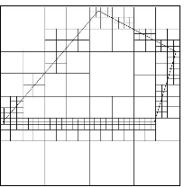
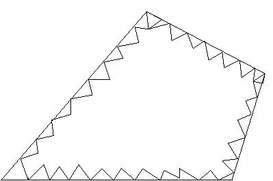
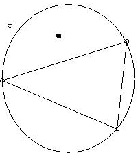
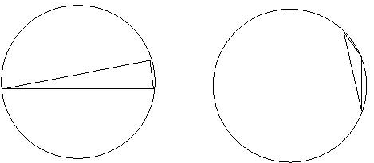
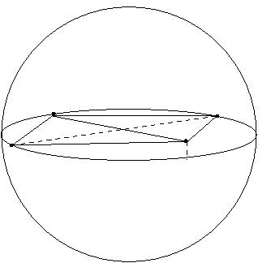
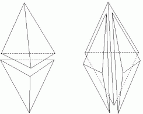
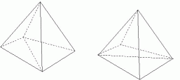

| Cubes containing the geometric model are recursively subdivided until the desired resolution is reached. Irregular cells are then created where cubes intersect the surface. Tetrahedra are generated from both the irregular cells on the boundary and the internal regular cells. |  |
Advancing front
| The tetrahedra are built progressively inward from the triangulated surface. An active front is maintained where new tetrahedra are formed. As the algorithm progresses, the front will advance to fill the remainder of the area with triangles. Also required intersection checks to ensure that triangles do not overlap as opposing fronts advance toward each other. |  |
Delaunay
The Delaunay criteria: Any node must not be contained within the circumsphere
of any tetrahedra within the mesh. Mesh the boundary of the geometry model
to provide an initial set of nodes. The boundary nodes are then triangulated
according to the Delaunay criterion. Nodes are then inserted incrementally
into the existing mesh, redefining the triangles or tetrahedra locally
as each new node is inserted to maintain the Delaunay criterion.
|  |
|
Methods:
- define nodes from a regular grid of points;
- nodes be recursively inserted at triangle or tetrahedral centroids;
- nodes at element circumcircle/circumsphere centers;
- advancing front approach to node insertion;
- point insertion along edges.
a.r. = 2/Ö3 »
1.15
a.r. = 4
The minimum angle a, gives a bound of p-2a
of maximum angle and guarantees an aspect ratio between |1/sina|
and |2/sina|.
|  |  |
A skinny triangle will have a circumcircle much lager than its shortest edge. Tetrahedra can have roughly equal length edges, a reasonably sized circumsphere, and yet be arbitrary skinny.
Definition.
A tetrahedral shape measure is a continuous function that evaluates
the quality of a tetrahedron. It must be invariant under translation, rotation,
reflection and uniform scaling of the tetrahedron. It must be maximum for
the regular tetrahedron and it must be minimum for a degenerate tetrahedron.
There is no local maximum other than the global maximum for a regular tetrahedron
and there is no local minimum other than the global minimum for a degenerate
tetrahedron. For the easy of comparison, it should be scaled to the interval
[0,1], and be 1 for the regular tetrahedron and 0 for a degenerate tetrahedron.
An aspect ratio function, defining by
| g = |
|
· |
|
| Methods:
- Laplacian smoothing} - an internal nodes placed at the average location of any other node connected to it by an edge; |
|
Cleanup
Cleanup methods improve the quality of the mesh by making local changes
to the element connectivities.
Topological improvement:
|  |  |
Topological improvement - attempt to optimize the number of edges sharing a single node (node degree).
Refinement
Refinement effectively reduces the local element size.
# unite square
4 2 0 1
1 0.0 0.0 1
2 0.0 1.0 1
3 1.0 1.0 1
4 1.0 0.0 1
4 1
1 1 2 1
2 2 3 1
3 3 4 1
4 4 1 1
0
# unite cube
< brep
< 3 3
< (
< v0_0 (< point (0.0 0.0 0.0)
>) () () >
< v0_1 (< point (1.0 0.0 0.0)
>) () () >
< v0_2 (< point (0.0 1.0 0.0)
>) () () >
< v0_3 (< point (0.0 0.0 1.0)
>) () () >
< v0_4 (< point (1.0 1.0 0.0)
>) () () >
< v0_5 (< point (0.0 1.0 1.0)
>) () () >
< v0_6 (< point (1.0 0.0 1.0)
>) () () >
< v0_7 (< point (1.0 1.0 1.0)
>) () () >
) < (
< e1_0 () (v0_0
v0_1) () >
< e1_1 () (v0_0
v0_2) () >
< e1_2 () (v0_0
v0_3) () >
< e1_3 () (v0_1
v0_4) () >
< e1_4 () (v0_1
v0_6) () >
< e1_5 () (v0_2
v0_4) () >
< e1_6 () (v0_2
v0_5) () >
< e1_7 () (v0_3
v0_5) () >
< e1_8 () (v0_3
v0_6) () >
< e1_9 () (v0_4
v0_7) () >
< e1_10 () (v0_5
v0_7) () >
< e1_11 () (v0_6
v0_7) () >
) < (
< f2_0 () (e1_0 e1_1 e1_5 e1_3 ) () >
< f2_1 () (e1_7 e1_10 e1_11 e1_8 ) () >
< f2_2 () (e1_0 e1_4 e1_8 e1_2 ) () >
< f2_3 () (e1_1 e1_2 e1_7 e1_6 ) () >
< f2_4 () (e1_5 e1_9 e1_10 e1_6 ) () >
< f2_5 () (e1_3 e1_4 e1_11 e1_9 ) () >
) < (
< d3_0 () (f2_0 f2_1 f2_2 f2_3 f2_4 f2_5) () >
) nil
>
>
>
>
>
>